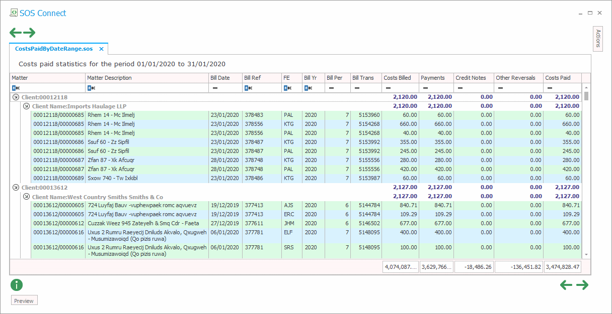

| Field Name | Data Type | Description |
| Matter Code | ||
| Bill transaction number | ||
| Bill entry number | ||
| Bill date | ||
| Bill number/reference | ||
| Accounting year in which bill was posted | ||
| Accounting period in which bill was posted | ||
| Costs billed (net value excluding VAT) | ||
| Costs billed (gross value including VAT) | ||
| Fee earner code for costs billed within the bill | ||
| Bill branch | ||
| Credit notes against costs (net value excluding VAT) | ||
| Payments against costs (net value excluding VAT) | ||
| Reversals/unallocations against costs (net value excluding VAT) | ||
| Payment date | ||
| Payment year/period combined in YYYYPP format | ||
| Payment transaction number | ||
| Credit notes against costs (gross value including VAT) | ||
| Payments against costs (gross value including VAT) | ||
| Other costs paid reversals/deallocations (gross value including VAT) |
The database view A.COSTSPAIDDATA can be used as the underlying data source from which it is possible to build a query to return costs paid information for a specific time frame, either year/period based or date range based.
An example query to calculate costs paid figures on a date-range basis from this database view is below, where the place holders {?fromdate} and {?todate} need to be replaced by the required start and end dates:
select
m."cl-code" "Client",
case when c."cl-code" is null then '*** CLIENT NOT FOUND ***' ELSE c."full-derived-name" end "Client Name",
cp."mt-code" "Matter",
m.description "Matter Description",
cp."Bill-Date" "Bill Date",
cp."Bill-Ref" "Bill Ref",
cp."bill-fe" "FE",
cp."bill-year" "Bill Yr",
cp."bill-period" "Bill Per",
cp."bill-trans-no" "Bill Trans",
cp."bill-entry-no" "Bill Entry",
cp."costs-billed" "Costs Billed",
cp.pay "Payments",
case when CN = 0 and REV + PAY = 0 then 0 else (case when CN <> 0 AND ((cn + pay + rev + pre > "costs-billed" and "costs-billed" > 0) or (cn + pay + rev + pre < "costs-billed" and "costs-billed" < 0)) then "costs-billed" - cn - pay - rev - pre else 0 end) end "Credit Note Reversals",
cp.rev "Other Reversals",
case when CN = 0 and REV + PAY = 0 then 0 else (case when CN <> 0 AND ((cn + pay + rev + pre > "costs-billed" and "costs-billed" > 0) or (cn + pay + rev + pre < "costs-billed" and "costs-billed" <0)) then "costs-billed" - cn - pre else pay + rev end) end "Costs Paid"
from pub.matdb m
left outer join pub.clidb c
on c."cl-code" = m."cl-code"
inner join
(select "mt-code", "bill-trans-no", "bill-entry-no", "bill-date", "bill-ref", "costs-billed", "bill-fe", "bill-year", "bill-period",
sum(case when "pay-date" < {?fromdate} then reversals + payments + "credit-notes" else 0 end) PRE,
sum(case when "pay-date" < {?fromdate} then 0 else "credit-notes" end) CN,
sum(case when "pay-date" < {?fromdate} then 0 else reversals end) REV,
sum(case when "pay-date" < {?fromdate} then 0 else payments end) PAY
from a.costspaiddata
where "pay-date" <= {?todate}
{?otherconditions}
group by "mt-code", "bill-trans-no", "bill-entry-no", "bill-date", "bill-ref", "costs-billed", "bill-fe", "bill-year", "bill-period"
having pay <> 0 or rev <> 0 or (cn <> 0 and cn + pre + pay + rev > "costs-billed" )) cp
on cp."mt-code" = m."mt-code"
Running the query above with from/to date place holders replaced with required dates will generate a dataset which can be shown in Connect in a grouped grid, as shown below:

Similarly, the query below will return costs paid data for a specific year/period range, where the place holders {?fromyearperiod} and {?toyearperiod} need to be replaced with the required year/period range values in the format YYYYPP:
select
m."cl-code" "Client",
case when c."cl-code" is null then '*** CLIENT NOT FOUND ***' ELSE c."full-derived-name" end "Client Name",
cp."mt-code" "Matter",
m.description "Matter Description",
cp."Bill-Date" "Bill Date",
cp."Bill-Ref" "Bill Ref",
cp."bill-fe" "FE",
cp."bill-year" "Bill Yr",
cp."bill-period" "Bill Per",
cp."bill-trans-no" "Bill Trans",
cp."bill-entry-no" "Bill Entry",
cp."costs-billed" "Costs Billed",
cp.pay "Payments",
case when CN = 0 and REV + PAY = 0 then 0 else (case when CN <> 0 AND ((cn + pay + rev + pre > "costs-billed" and "costs-billed" > 0) or (cn + pay + rev + pre < "costs-billed" and "costs-billed" < 0)) then "costs-billed" - cn - pay - rev - pre else 0 end) end "Credit Note Reversals",
cp.rev "Other Reversals",
case when CN = 0 and REV + PAY = 0 then 0 else (case when CN <> 0 AND ((cn + pay + rev + pre > "costs-billed" and "costs-billed" > 0) or (cn + pay + rev + pre < "costs-billed" and "costs-billed" <0)) then "costs-billed" - cn - pre else pay + rev end) end "Costs Paid"
from pub.matdb m
left outer join pub.clidb c
on c."cl-code" = m."cl-code"
inner join
(select "mt-code", "bill-trans-no", "bill-entry-no", "bill-date", "bill-ref", "costs-billed", "bill-fe", "bill-year", "bill-period",
sum(case when "pay-year-period" < {?fromyearperiod} then reversals + payments + "credit-notes" else 0 end) PRE,
sum(case when "pay-year-period" < {?fromyearperiod} then 0 else "credit-notes" end) CN,
sum(case when "pay-year-period" < {?fromyearperiod} then 0 else reversals end) REV,
sum(case when "pay-year-period" < {?fromyearperiod} then 0 else payments end) PAY
from a.costspaiddata
where "pay-year-period" <= {?toyearperiod}
{?otherconditions}
group by "mt-code", "bill-trans-no", "bill-entry-no", "bill-date", "bill-ref", "costs-billed", "bill-fe", "bill-year", "bill-period"
having pay <> 0 or rev <> 0 or (cn <> 0 and ((cn + pay + rev + pre > "costs-billed" and "costs-billed" > 0) or (cn + pay + rev + pre < "costs-billed" and "costs-billed" < 0)))) cp
on cp."mt-code" = m."mt-code"